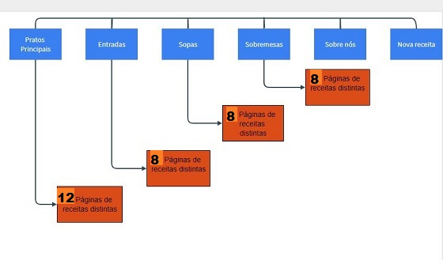
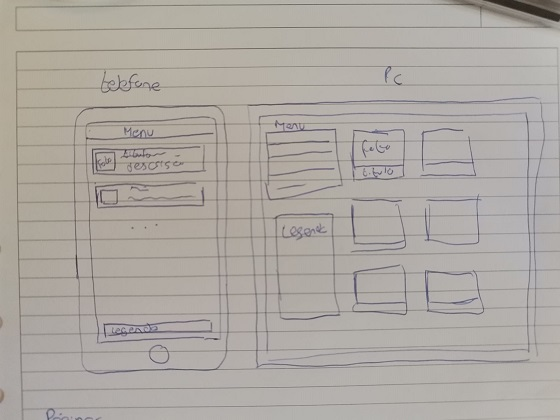

Sobre nós:
Websites de cozinha vegetariana:
Made by Choice
Centro Vegetariano
Loja vegetariana

Mapa do Website

Layouts originais defenidos para o Website
Inventário
| Elemento |
Quantidade |
| Páginas |
42 |
| Imagens |
42 |
| Links externos |
45 |
| Vídeos |
3 |
| Animações |
3 |
| Caracteristicas |
Elementos/técnicas |
Implementado |
Exemplos |
| Layouts |
Usou-se o CSS grid e CSS flexbox para construção de layouts |
check_circle |
A maioria das imagens foi implementada utilizando a flexbox |
| Responsividade |
Foram usadas media queries que adaptam o layout para telemovel e~
PC consoante o tamanho da janela do browser. |
check_circle |
Todo o site é responsivo |
| Seletores |
Foram utilizados seletores universais, de tipo, de classe, de id, de
Pseudo-classe e de Pseudo-elemento.
|
check_circle |
Para a estilização das tabelas e da navigacion bar e para melhor visualização dos vários componentes do site |
| Etiquetas |
HTML5 main, header, article, footer, figure... |
check_circle |
Foram utilizadas todas as etiquetas de HTML5 excepto o article e o aside |
| Animações |
Foram feitas animações usando keyframes |
check_circle |
Foram utilizadas nas figcaption da página sobre nós fazendo uma ir de
azul para laranja, e a outra de rosa para laranja
|